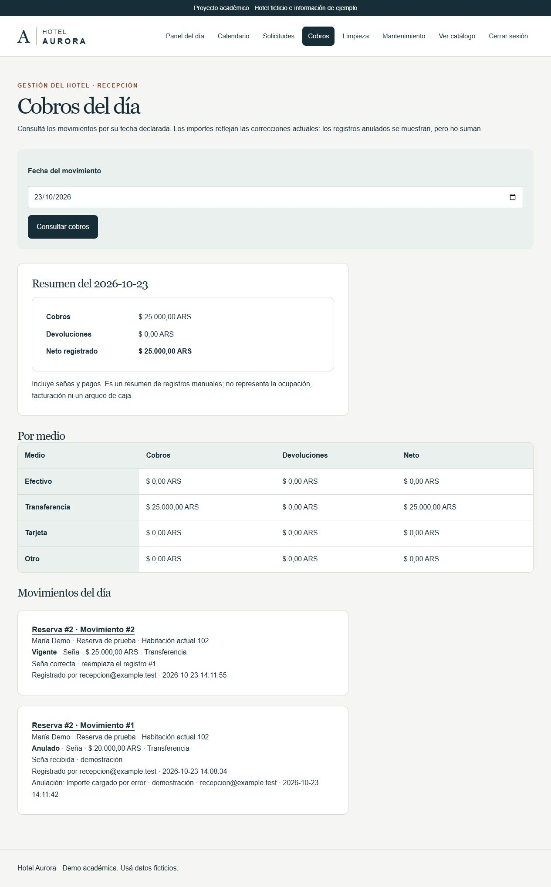
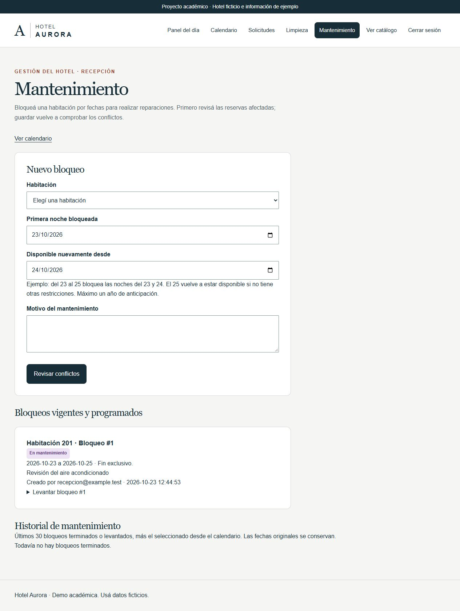
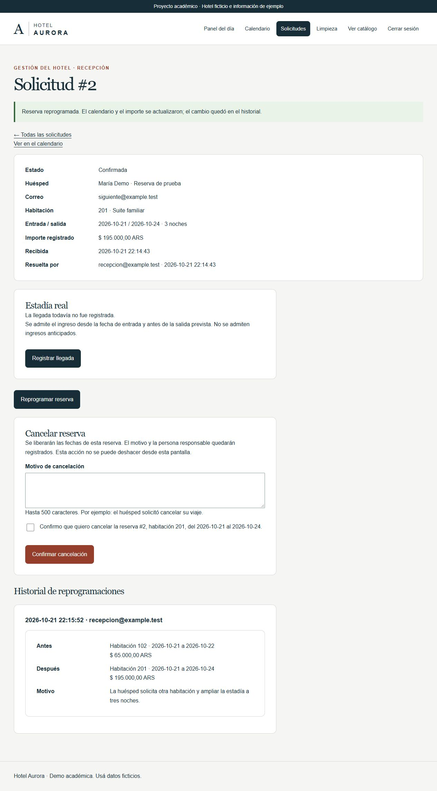

Evidencia de Hotel Aurora
Capturas de recorridos locales con datos ficticios. Referencia de ejecución: octubre de 2026. Las capturas documentan el estado visible; las reglas y la concurrencia se verifican además mediante pruebas automatizadas.
Pagos y corrección
23/10/2026. Se anuló la seña incorrecta de $20.000 y se registró una de $25.000. El resumen muestra $25.000 y conserva el movimiento anulado con su motivo. No se ejecutó un cobro bancario.

Mantenimiento
23/10/2026. Bloqueo de la habitación 201 por revisión del aire acondicionado. Las fechas son inicio inclusivo y fin exclusivo; la disponibilidad y el acceso desde el calendario se verificaron en el recorrido.

Reprogramación
Captura conservada de la verificación local de reprogramaciones. El cambio y su historial se documentan en la guía del módulo. No sustituye una nueva prueba móvil.

Alcance de la evidencia
Las pruebas visuales se realizaron en escritorio. Los datos de prueba temporales se retiraron al cerrar cada entorno. La revisión móvil de los formularios recientes continúa pendiente. Las suites registradas pasaron 616 y 17 comprobaciones, respectivamente.